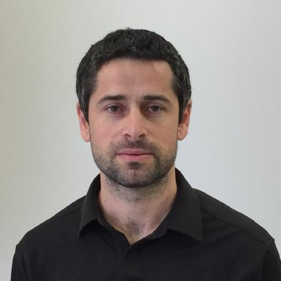

-
 Tavi Halperin
School of Computer Science and Engineering
The Hebrew University of Jerusalem
Email: tavihalperin@gmail
Google Scholar | Linkedin | Github | CV
I am a Phd candidate at the Hebrew University of Jerusalem, focusing on Computer Vision and Deep Learning. Specifically, I'm interested in video processing, geometry and in using machine learning to jointly learn from audio and video. My advisor is Prof. Shmuel Peleg.
Publications
Egosampling: Wide view hyperlapse from egocentric videos
IEEE Transactions on Circuits and Systems for Video Technology (TCSVT) 2017

Epipolar geometry based on line similarity
International Conference on Pattern Recognition (ICPR) 2016
Patents
Method and system for generating adaptive fast forward of egocentric videos